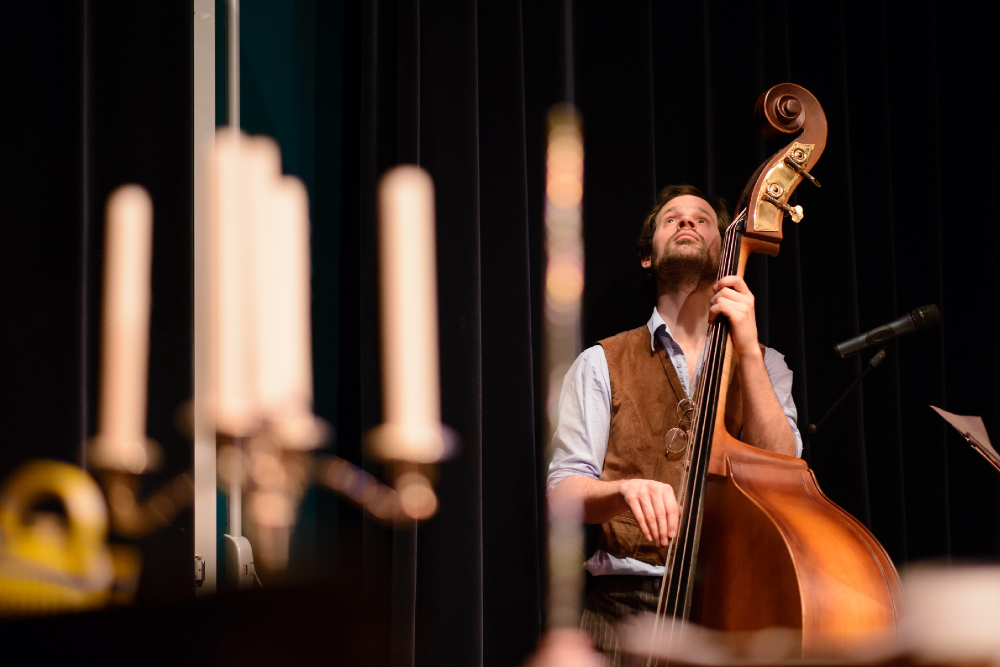

#8 De kostbare editie
#8 De kostbare editie


Lamarziendan 8: De Kostbare Editie
Voor het eerst stonden we geprogrammeerd op de zaterdagavond in de Kleine Zaal van de Verkadefabriek tijdens het RAUWKOST Festival. De opkomst was fenomenaal en het publiek hoffelijk en bereidwillig. Het publiek bestond tijdens Lamarziendan voor een groot deel uit nieuwe gezichten.De Verkadefabriek was voor onze organisatie een fijn, warm bad. We danken dan ook de programmeur, techniek en vrijwilligers van Verkade voor de fijne begeleiding op de dag en de avond.
Uiteraard willen we de drummer van onze huisband Pipi Belli, Noël Josemans, in het zonnetje zetten. In een kort tijdsbestek heeft hij een gloednieuw jongeren festival rondom de Tramkade op de kaart gezet.
Presentatoren Jordy Sanchez en Max Joey van den Hout brachten de line-up van deze fantastische avond:
- Elise Maniere, de Franse danseres/performer zorgde voor een prachtige opening; ze kroop uit een ei!
- Anne van Damme, de Zeeuws-Bossche singsongwriter met kleine intieme nummers á la Joni Mitchell en Ed Sheeran.
- Annika en Julia, het komisch cabaret/circus/performance duo met hun hilarische performance met theepotten in het haar en trapeze act.
- Ivana Ivkovich, Politiek filosofe, eigenaar van nowishfullthinking, met haar speculerende verhaal over het prijskaartje en de moraal achter het idee van ‘boontje komt om zijn loontje’.
- Jordy Sanchez, met zijn vlinderact.
- Jacob Lohmann, de onhandige stagiaire met zijn uit de klauwen gelopen balans-act.
- Bertram, zanger/liedschrijver en theatermaker met breekbare, intieme, sensuele, maar bombastische liedjes met de kloten van Jacques Brel.
- En least but not remotely least, Clint Eastbird de frisse Indie-pop band uit Den Bosch onder leiding van frontman Djurre van Deijck.
- DJ Stijn Ariaens zorgde op de avond voor de nodige muzikale omlijsting die op het einde ervoor zorgen dat de voetjes de dansvloer betreedden.
Extra dank voor: Pim Kromhout, Jora Van den Akker, Merijn Krol, Stijn van Pelt, Susan Meijburg, Peggy Knobel, Thom Brands, Janneke Swanenberg en Jane Duursma, Eefje van Boxtel en u, het publiek onze trouwe bezoekers.